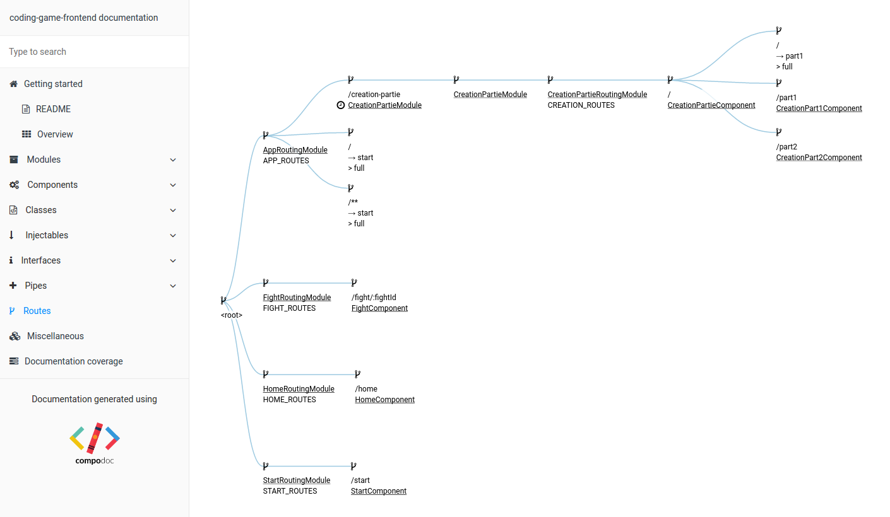

Follow the style guide, provide a const of type 'Routes' with an unique name :
const APP_ROUTES: Routes = [
{ path: 'about', component: AboutComponent },
{ path: '', component: HomeComponent}
];
...
RouterModule.forRoot(APP_ROUTES)
spread variables in routes definition are not yet supported
const APP_ROUTES: Routes = [...ROUTES];
